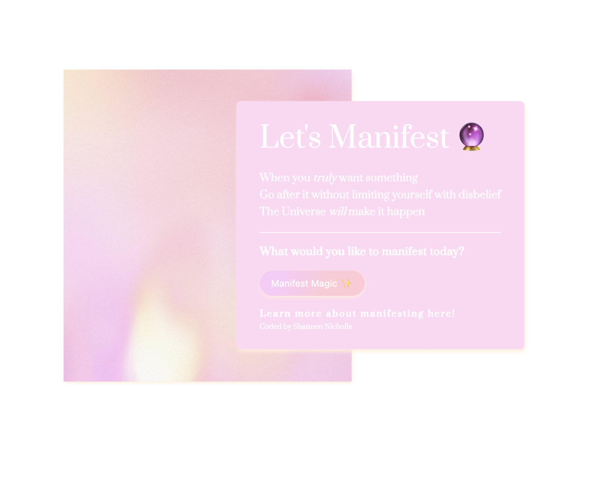
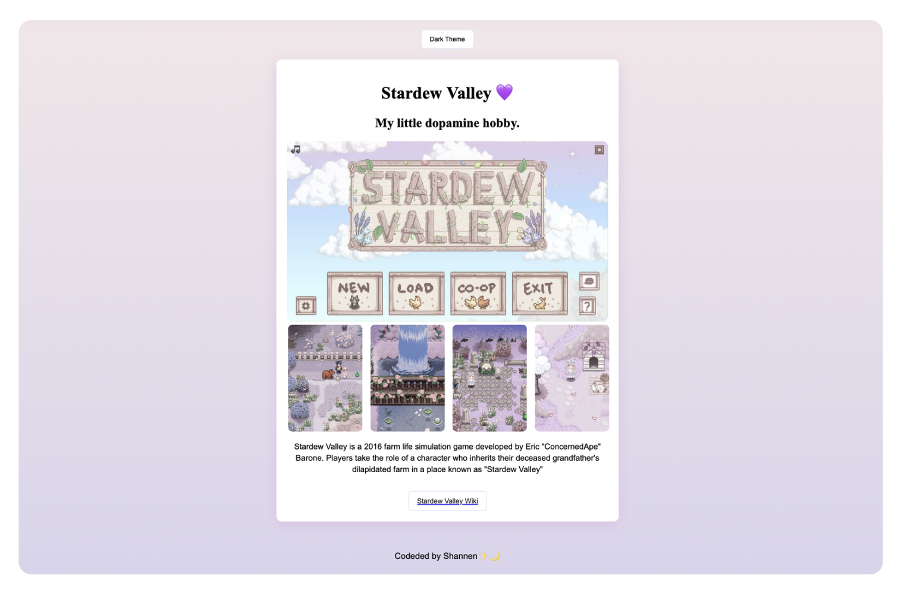
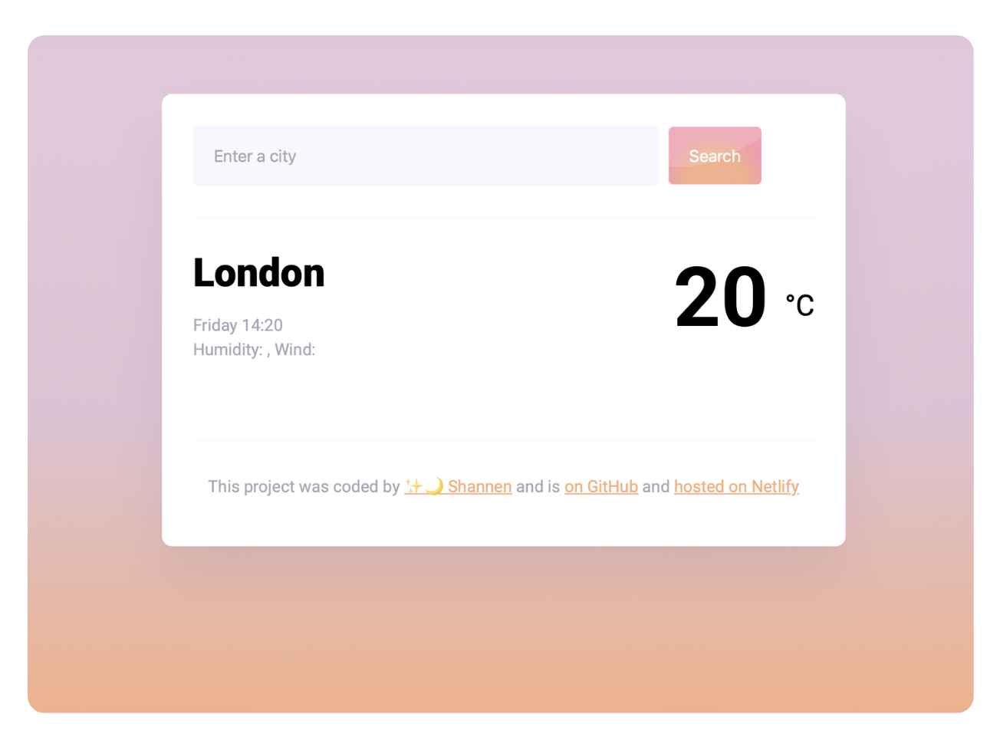

Experience
Years of experience in operations, administration, customer experience and managing fast-paced environments taught me how to solve problems and pay attention to detail.
Creative thinking meets front-end development.
I'm a UK-based aspiring front-end developer who loves turning ideas into beautiful, thoughtful and user-friendly digital experiences.
A little about where I've come from, what I'm learning, and why I love creating things for the web.
Hi, I'm Shannen! I'm an aspiring front-end developer with a background in operations, customer experience, administration and creative problem-solving.
After spending years working in fast-paced environments, managing teams, solving problems and keeping things running behind the scenes, I discovered a new creative outlet through coding.
What started with learning HTML and CSS quickly turned into something I genuinely love. I'm fascinated by the way a few lines of code can transform an idea into something interactive, useful and completely unique.
I'm particularly drawn to the space where design and technology meet. I love experimenting with layouts, colour, animation and interactions while making sure the final experience remains intuitive and accessible.
I'm currently developing my skills in HTML, CSS, JavaScript and Bootstrap, while continuing to explore everything that front-end development has to offer.
A few things that have shaped the way I approach creativity, technology and problem-solving.
Years of experience in operations, administration, customer experience and managing fast-paced environments taught me how to solve problems and pay attention to detail.
I'm building my front-end development skills through hands-on projects, experimenting with code and learning how websites and applications work from the ground up.
From design and visual storytelling to exploring new ideas, creativity is a huge part of how I approach projects and solve problems.
The tools and technologies I'm currently exploring as I grow my development skills.
A few of the projects I've created while learning and experimenting with front-end development.

An interactive web application exploring manifestation, reflection and positive thinking.

A playful project exploring creativity, hobbies and finding inspiration.

A responsive weather application built while learning JavaScript, APIs and dynamic content.
I'm always excited to learn, collaborate and work on creative ideas. Have a project in mind or simply want to say hello?
Get in touch →